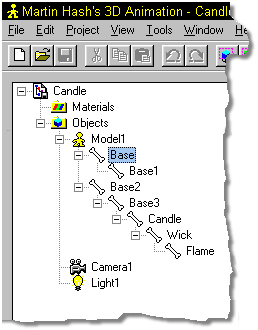
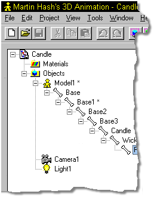

To finish the Candle, the last step is arranging the hierarchy of the bones.
This is quite easy to accomplish, since the hierarchy is adjustable through drag
and drop.
To finish the Candle, the last step is arranging the hierarchy of the bones.
This is quite easy to accomplish, since the hierarchy is adjustable through drag
and drop.


In most cases, the hierarchy of a model will be more complex than this example, but the hierarchical tree shown in the Project Workspace will make it simple to understand and correct problems.
In this particular case, all of the bones should be childed to the patriarch in the order that they were added. Figure 19 shows the current hierarchy of the candle. The bone named Base is the patriarch, and it has a child named Base1. Base2 is also a child of Base, and has children named Base3, Candle, Wick, and Flame.

Figure 19
The problem is that we need to move Base2 and it’s children to below Base1 in the hierarchical chain. To do this, use the mouse to click on Base2 and hold the mouse button down. Drag the Base2 tag over the Base1 tag and release the mouse button. The hierarchy should automatically reorder to match figure 20.

Figure 20
That’s it! You are now safe again for the time being….